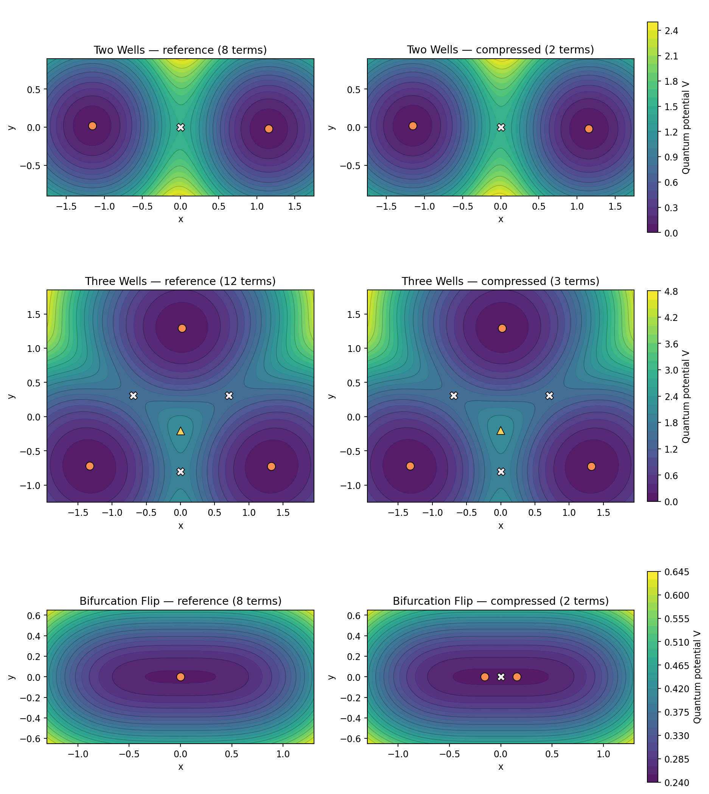
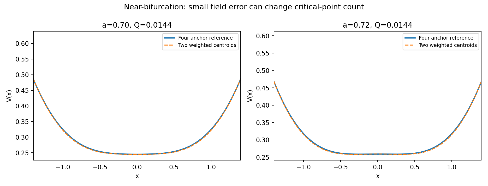
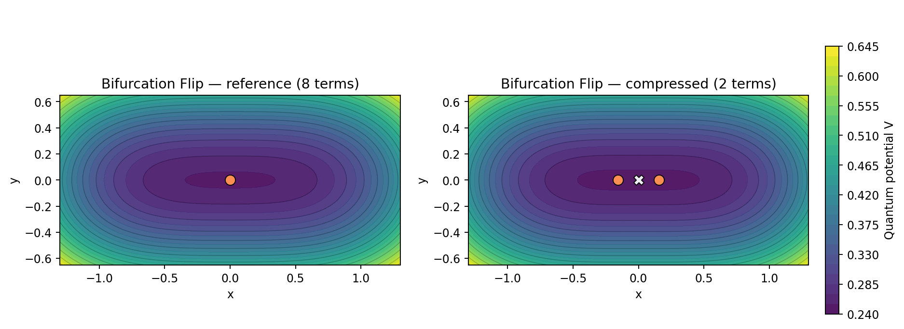
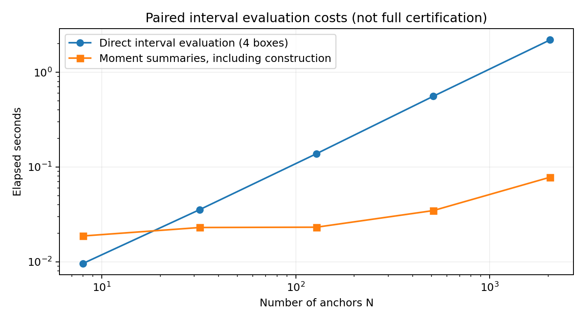
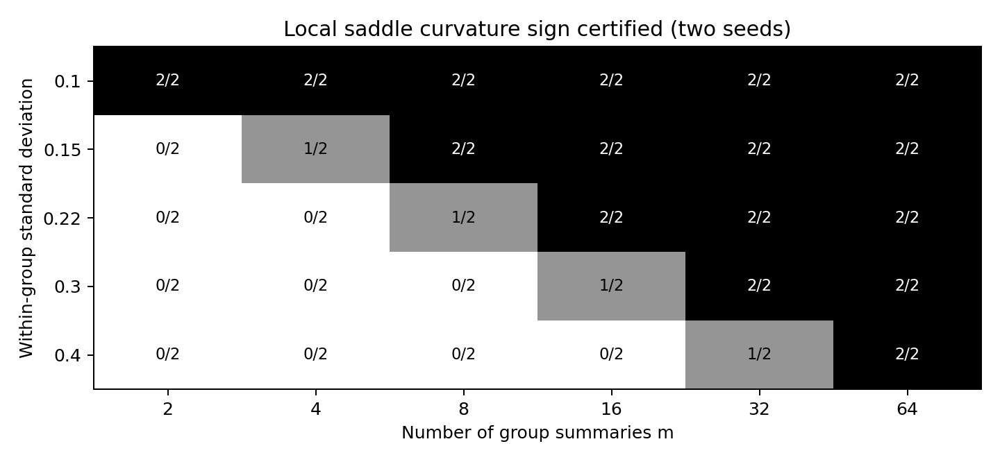
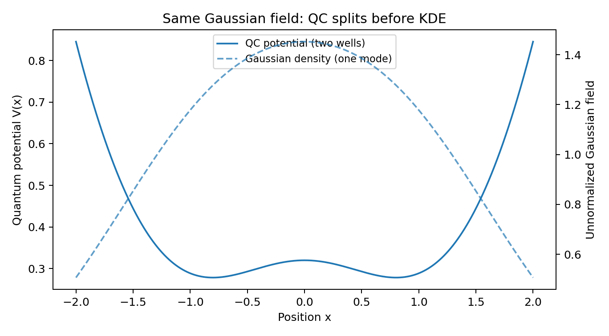
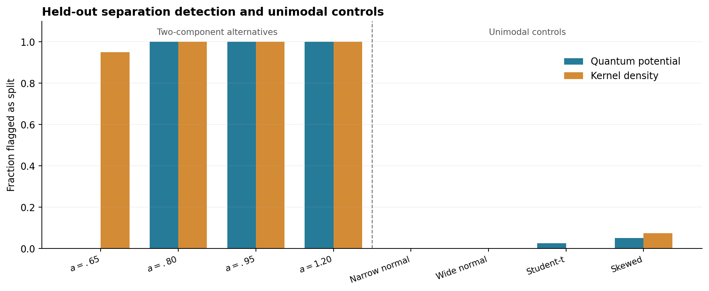

Certified Compression of Gaussian Quantum-Potential Landscapes
Stability bounds, critical-point counterexamples, computational tradeoffs, and matched KDE comparisons
Domenic Merenda
dmerenda@gmail.com
22 November 2026
Abstract
Question. Can low-cardinality summaries of Gaussian quantum-clustering potentials preserve and certify critical-point structure at lower computational cost, and does the extra potential topology provide downstream statistical value?
Approach. We derive group-moment Taylor enclosures, couple them to interval/Krawczyk critical-point tests, examine near-bifurcation failures, benchmark full and compressed verification, and compare quantum-potential separation detection with bandwidth-tuned kernel density estimation (KDE).
Results. Small two-dimensional reference potentials can be verified from compressed summaries. On a favorable fixed two-well family, two summaries supported verification through 2,048 original anchors with approximately constant observed verification time. Certification was inconclusive on overlapping, anisotropic and near-degenerate inputs, however, and paired 32-anchor end-to-end time improved only modestly (17.945 s direct; 16.238 s compressed). In a held-out synthetic split-detection study, tuned KDE detected 98.75% of alternatives versus 75.0% for QC at a shared 1.875% false-split rate.
Conclusion. The results support an instructive numerical technique and useful counterexamples; they do not establish a general new topology-preserving coreset theorem, consistent computational superiority, or a unique machine-learning advantage.
1. Research question and scope
Quantum Clustering (QC) constructs a scalar potential from a Gaussian kernel field. Critical points of this potential can reveal structure not shared by the modes of the original Gaussian density estimator. The research considered whether compressing the Gaussian sources into weighted groups—and retaining enough moment or support information—could preserve this structure with certifiable error and worthwhile computation savings.
This work concerns static Gaussian QC, not time-dependent unitary Dynamic Quantum Clustering, quantum computing, or a general-purpose classifier. We distinguish: (a) a numerical root match, (b) a conditional interval certificate of the count and types of critical points on a domain, and (c) full basin topology, which the current method does not certify.
For locations \(x_i\in\mathbb R^d\), positive weights \(w_i\) and bandwidth \(\sigma>0\), define \[\begin{aligned} \psi(x)&=\sum_iw_i\exp\!\left(-\frac{\|x-x_i\|^2}{2\sigma^2}\right),\\ V(x)&=\frac{\sigma^2}{2}\frac{\Delta\psi(x)}{\psi(x)}+\frac d2 =\frac{\sum_iw_i\exp(-\|x-x_i\|^2/(2\sigma^2))\|x-x_i\|^2}{2\sigma^2\sum_iw_i\exp(-\|x-x_i\|^2/(2\sigma^2))}. \end{aligned}\] The second equality holds exactly for isotropic Gaussian kernels. The potential is a location-dependent, kernel-weighted mean squared distance, not a simulated quantum trajectory. All topological assertions are restricted to explicit compact analysis domains.
2. Compression and verification method
Why group moments improve an approximation
Group the sources into sets \(G_j\) with centers \(c_j\), residuals \(r_i=x_i-c_j\), and moment sums \(S_j=\sum_{i\in G_j}r_i\) and \(M_j=\sum_{i\in G_j}r_ir_i^\top\). For a Gaussian kernel \(K\), a multivariate Taylor expansion gives \[\sum_{i\in G_j} D^\alpha K(x-x_i) =n_jD^\alpha K(x-c_j)-S_j\!\cdot\!\nabla D^\alpha K(x-c_j) +\tfrac12M_j\!:\!\nabla^2D^\alpha K(x-c_j)+R_{j,\alpha}(x).\] Exact centroid choice cancels \(S_j\). Storing the second moment corrects the next term; support-based third-order remainders bound the residual. Derivatives of \(V\) through its Hessian require Gaussian-field derivatives through fourth order; the remainder enclosures therefore evaluate Gaussian derivatives through seventh order. Bounds must also establish \(\psi>0\) over every queried spatial box before dividing.
Conditional critical-point certification
The verifier proposes roots of \(\nabla V=0\), then uses interval gradient/Hessian enclosures and Krawczyk tests to establish existence and uniqueness within candidate boxes. Interval subdivision excludes additional roots from the remaining rectangular domain. The Hessian’s inertia distinguishes minima, saddles and maxima. When subdivision cannot settle all regions, the result is inconclusive, not a proof of a topological mismatch.

3. A counterexample and the role of degeneracy
Near a bifurcation, two pointwise-close potentials need not have the same number of wells. A controlled one-dimensional four-anchor reference had a single minimum while its two-centroid representation had two minima and one maximum. The quantization error was \(Q=0.0144\) and sampled maximum potential difference \(0.01176\), yet the central curvature changed sign (\(+0.00638\) versus \(-0.00820\)). The qualitative change is explained by proximity to a degenerate critical point; numerical smallness alone is insufficient for topological stability.


A second exact construction illustrates why a centroid and covariance cannot identify the QC topology. With \(\sigma=1\), the symmetric weighted samples \(\{-0.8,+0.8\}\) with weights \((.5,.5)\) and \(\{-1.6,0,+1.6\}\) with weights \((.125,.75,.125)\) both have mass one, mean zero and variance \(0.64\). Yet \(V''(0)=-0.28\) for the first and approximately \(+0.8201\) for the second. Their central stationary points have opposite local type. A certification scheme relying only on raw moments without support/remainder information cannot resolve this distinction in general.
4. Certification results and computational costs
Favorable compact two-well distributions
For a compact two-well family with fixed group complexity, two moment summaries supported successful conditional verification of two minima and one saddle as the number of original anchors grew. Observed verification time including summary construction was approximately 13–14 s for \(N\in\{8,32,128,512,2048\}\). This does not establish constant-time complexity for arbitrary data: group spread and the number of resolved structures were held approximately fixed.
| Original sources N | Moment summaries m | Verification time (s) |
|---|---|---|
| 8 | 2 | 13.5 |
| 32 | 2 | 13.7 |
| 128 | 2 | 13.1 |
| 512 | 2 | 13.5 |
| 2,048 | 2 | 13.1 |
Table 1. Single-run controlled two-well verification, including summary construction. These timings are not statistically characterized wall-clock estimates.

Matched whole-verifier comparisons and failure cases
A fresh paired 32-anchor test certified the same three critical points: 17.945 s direct versus 16.238 s with moments, an approximately 1.11\(\times\) speedup. A larger direct test was censored by a run limit and is not a measured speedup. On deliberately overlapping, anisotropic and near-degenerate mixtures, the moment verifier returned inconclusive results or reached run limits even with more representatives. One direct near-bifurcation run certified a single minimum in 3.403 s while the moment verifier remained inconclusive.
| Stress case | N | m | Moment certificate outcome |
|---|---|---|---|
| Compact stochastic two-well | 32 | 2 | Three critical points certified |
| Overlapping two-well | 24 | 2, 4, 8 | Inconclusive at all three settings |
| Near-bifurcation | 24 | 2 | Inconclusive; one candidate region |
| Anisotropic three-group | 24 | 4 | Inconclusive; multiple candidates |
| Canonical three-well | 12 | 3 | Unfinished within imposed run limit |
Table 2. Adversarial whole-verifier tests. Inconclusive does not demonstrate a topology change; cases were selected to stress the method.

5. Does quantum-potential topology add statistical value?
For two equally weighted Gaussian sources at \(\pm a\), the central KDE density bifurcation occurs at \(a=\sigma\), while the corresponding QC potential changes central curvature at \(a=\sigma/\sqrt2\). Thus QC can yield two wells while same-bandwidth KDE remains unimodal. This is a real analytic distinction, but a smaller KDE bandwidth can also produce a split.

We conducted a held-out test with 160 samples per dataset, four mixture alternatives, four unimodal controls, a common nine-value bandwidth candidate set and disjoint validation/test seeds. Each method chose its bandwidth to maximize validation detection subject to pooled validation false-split rate at most 5%. The final test evaluated 40 independent seeds per condition; a split was registered by a numerical grid-mode procedure. The selected bandwidths were \(0.90\) (QC) and \(0.52\) (KDE).
| Held-out metric | QC | KDE |
|---|---|---|
| Alternative detection (160 trials) | 75.0% | 98.75% |
| Control false-split rate (160 trials) | 1.875% | 1.875% |
| Closest mixture, a = 0.65 (40 trials) | 0/40 | 38/40 |
| Remaining three mixtures (120 trials) | 120/120 | 120/120 |
Table 3. Bandwidths were selected on validation data and evaluated on disjoint test seeds. These synthetic results are not a universal method ranking.

The result fails to support a distinctive statistical advantage for QC in this test. It does not establish an equivalence between the two operators or rule out favorable problems elsewhere. Earlier nonconvex clustering experiments also showed that strong spectral/density baselines often matched QC’s downstream bandit benefit, limiting the significance of comparisons against K-means alone.
6. Independent audit, prior work, and what remains unproved
An independent high-precision implementation, using system MPFR at 256-bit precision and a different weighted-distance derivative formula, checked sampled values of \(V\), its gradient and its Hessian against interval enclosures. All 72 of 72 sampled spatial boxes passed, with two sample points checked per box. These tests increase confidence in the code, but do not independently validate every outward-rounded interval operation or prove exhaustive root enumeration. No independent formal proof assistant or separately audited interval arithmetic package was used.
The approach overlaps heavily with established Gaussian kernel approximation, Taylor moment methods, Krawczyk verification, Morse-theoretic stability and topology-preserving KDE coresets. Related prior art includes original Quantum Clustering by Horn and Gottlieb, weighted-particle QC analyses, and recent uncertainty-aware KDE Morse-core-set work. We did not implement the complete recent competing topological coreset algorithm, so a claim of superiority to it would be unsupported.
7. Conclusion
The investigation produced a reproducible technique for conditional two-dimensional critical-point verification from compressed Gaussian summaries, together with exact and numerical counterexamples clarifying its limits. On compact structured mixtures, verification queries can avoid revisiting all source observations, and primitive-level computational costs can improve substantially. But hard distributions frequently make certificates inconclusive; matched end-to-end speedup was small in the completed paired test; and QC offered no distinctive held-out resolution benefit over tuned KDE in the tested protocol.
Reproduction note. The companion archive includes source code, CSV results, figure images, environment guidance and caveats. All plots denote sampled or numerical observations unless explicitly marked as interval-conditional.
Reproducibility and artifact index
| Directory | Contents |
|---|---|
figures/ |
Nine figure files, including the two-dimensional adversarial example |
data/ |
CSV tables for detection, compression cost, dispersion, and independent checks |
code/ |
Interval verifier, moment approximation, point audit, and held-out test code |
Minimal replay commands (run from the package root in a fresh Python environment):
python code/heldout_resolution.py
python code/mpfr_point_audit.py
python code/paired_certification.py \
--case compact_big --n 32 --m 2 \
--method moment --out compact_moment.jsonThe same verifier supports --method direct for
comparison. Results depend on runtime, dependencies and numerical
precision. A failed or timed-out certificate should be recorded as
inconclusive; neither constitutes a proof of differing topology.
Selected references
Horn, D. and Gottlieb, A. (2001). The Method of Quantum Clustering. Advances in Neural Information Processing Systems.
Maignan, A. and Scott, A. (2021). A Comprehensive Analysis of Quantum Clustering: Finding All the Potential Minima.
Cohen-Steiner, D., Edelsbrunner, H. and Harer, J. (2007). Stability of persistence diagrams. Discrete & Computational Geometry.
Chen, Y.-C., Genovese, C. and Wasserman, L. Statistical work on Morse-Smale complex estimation and stability.
Lyu, G., Gorski, K., Phillips, J. and Wang, B. (2026). A Topology-Preserving Coreset for Kernel Regression in Scientific Visualization. IEEE TVCG.
Lyu, G., Phillips, J. and Wang, B. (2026). Topological Analysis of Kernel Density Estimates via Uncertainty-Aware Morse Complexes and Coresets. IEEE VIS.